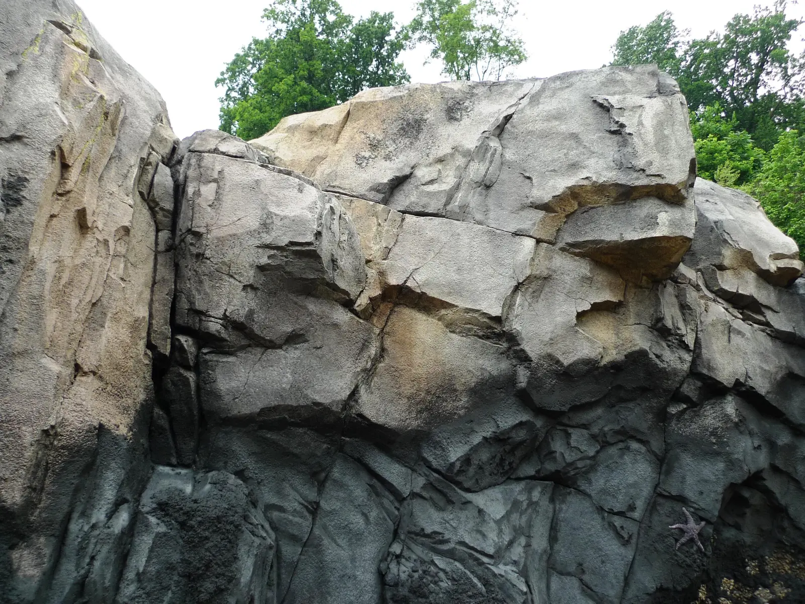
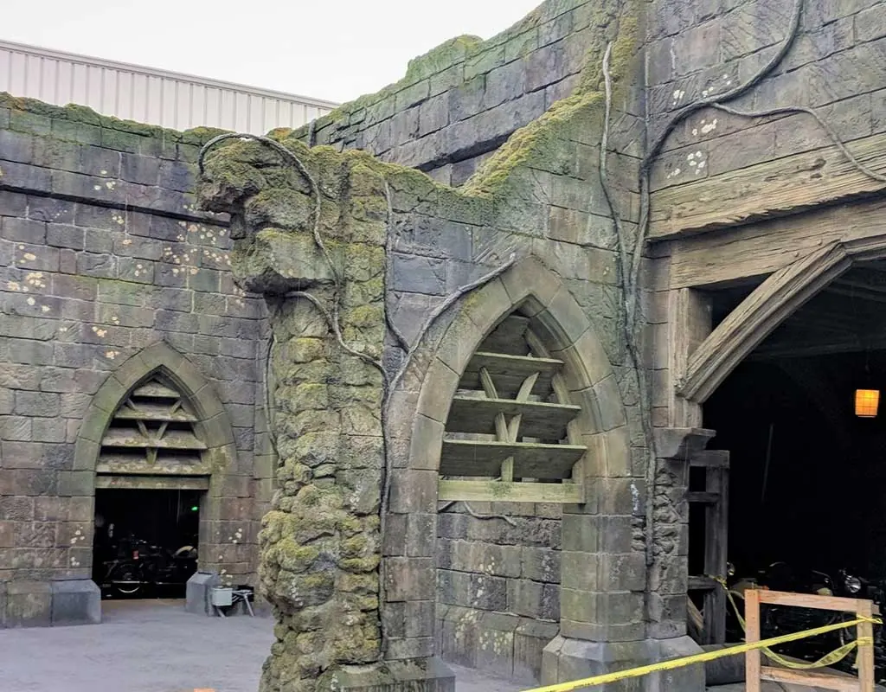

Service 05 of 05
Artificial Rockwork
Since 1957, COST has pioneered several approaches to deliver award-winning artificial rockwork projects for zoos, aquariums, theme parks, museums, and other educational and entertainment venues.

The process involves several interrelated steps to ensure the finished product meets COST’s Quality Assurance/Quality Control (QA/QC) standards, aligns with the design intent, and delivers the stakeholders’ vision.
Preconstruction
Kick-off Meeting
COST’s simulated rockwork creative process varies from job to job but typically begins in preconstruction with a kick-off meeting. COST’s project manager and our Director of Design schedule an initial web-based or site meeting to meet key stakeholders (architects, landscape architects, designers, general contractors, owners, and other consultants) and further discuss shop drawing/design requirements, site logistics, scheduling, fabrication, etc. They set a timeline for future regularly scheduled meetings, as determined based on the size and complexity of the project.
Shop Drawings
After the kick-off meeting, shop drawings are initiated by our project team. As design proceeds to key milestones, the drawings are reviewed by COST’s project manager and design managers to ensure compliance with design intent and conversations/meetings with clients. Concurrently, shop drawings are further vetted by our EVP of Project Management and finally by our COO from a constructability perspective. This checks and balances approach ensures drawings are reviewed from both design and construction perspectives.
Because many of our rockwork projects are displayed in public venues (like zoological parks, resorts, and museums), we take all the necessary steps to ensure the design’s structural soundness and safety. All shop drawings developed by COST that require a structural stamp will be reviewed and stamped by a professional engineer prior to final submittal.
The COST design team is continuously upgrading our technology to keep up with the demands of complex and highly specialized construction projects. COST’s staffed design team uses the latest in AutoCAD, Rhinoceros, Revit, and many other 3D programs.
Model Phase
Physical Models
During or shortly after the completion of shop drawings, a scale construction model is developed, typically in ¼″ or ½″ scale. Models further present the thematic massing and provide a working tool for our fabrication and construction teams. Likewise, modeling allows for another stakeholder review opportunity.
These physical models, composed of wood, cardboard, and clay, allow the project team to view scenic work and/or individual exhibits from multiple perspectives. Overall massing and finishes can be adjusted with relative ease. The project team reviews these models at key milestones in a collaborative work environment to ensure their vision is captured. These meetings can also be performed via web-based if the team is unable to meet in person.
The final approved models are tagged with key elevations and information and then moved into our fabrication department to construct steel armatures, as required. Each armature is tagged according to the model armature number. Some simulated rockwork projects include a combination of both fabricated steel and field-erected steel as required to meet scheduling constraints.
3D/Digital Modeling
While physical models tend to be the most common approach to building simulated rockwork, digital modeling has become increasingly popular on complex projects, especially in the theme park industry. These 3D models are accessible to stakeholders to share and can be used for Building Information Modeling (BIM) for clash detection and coordination with other trades. Like traditional models, sections of the rockwork are tagged and numbered, allowing reinforcing steel to be bent through an automated bar bending process. COST’s proprietary approach to this 3D modeling and bar bending process is called Computer Aided Framework System (CAFS). As bars are bent and numbered, they are readied for armature welding.
Samples and Mock-ups
During the shop drawing/modeling phase, artificial rockwork samples and mock-ups are developed of each of the finishes required or specified in the contract documents. The samples are sculpted and painted per the photographic representations provided by the architect or through our shop drawing submittal.
All samples and mock-ups are reviewed by COST’s Art Director to ensure they meet our artistic standards and all project requirements. After internal and stakeholder approvals, these samples are shipped for use on the job site. Throughout construction, these samples will be used to align our site work artistry to the approved textures and colorations. Samples can vary from small 1′x1′ to large 7′x7′ rockwork panels based upon the stakeholder requirements. Larger site mock-ups can be performed in-situ which is especially beneficial for large-scale rockwork cliffs and escarpments.
Fabrication
Due to space limitations on active construction sites, we oftentimes use shop fabrication to complete the necessary steel armatures used for the major theme areas. COST’s steel team fabricates these armatures within our 144,000 sq. ft. plant. Our lath material is attached to each armature, as per engineered shop drawings. Once shop-fabricated armatures are completed, the model and armatures are shipped to the jobsite for the steel erection phase. Other fabricated theme items that require controlled environments to properly cure are also fabricated and shipped to the jobsite for installation.

Construction
Most artificial rockwork projects involve six site construction steps from start to finish:
- +Structural steel, if applicable
- 01Steel armature installation
- 02Structure coat
- 03Finish coat
- 04Carving
- 05Painting
- 06Aging
Once notified by the project team that the site is ready for our work, we mobilize our highly specialized construction team and our equipment to the jobsite. The COST crew, led by our superintendent, will erect scaffold (for taller rock formations) as allowable per the project schedule. As our shop drawings and model illustrate, we build the rockwork within the construction area in lifts. Our steel armature system may be stand-alone or tied to walls, primary steel structure, concrete retaining walls, or other structural reinforcing.
Once the steel armature system is nearing completion, we dispatch our shotcrete team and artisans to follow behind our steelwork crew. We begin with a shotcrete structure coat applied to the thickness based in the stamped engineered drawing package. Shotcrete is pneumatically applied to the lath and steel armatures. This coat forms the structure of the artificial rockwork and provides the overall shapes, per the approved model. As the structure coat cures, a secondary or finish coat is applied for texture.
COST artisans, under the owner’s or architect’s guidance, hand sculpt the finish coats based upon the approved samples, photographic references, and model. Our artists may also use stamping techniques to deliver specific textures with an end goal of delivering highly realistic artificial rockwork finishes.
During the initial phases of artistry, an in-situ area is sculpted and painted on a larger scale, 8′ x 10′ or larger, to allow for a larger scale mock-up and approval tool. This phase is part of our QA/QC process and acts as another checks and balances approach, especially when large-scale, multi-story formations are constructed. Our lead artisans have extensive backgrounds in hand carving and painting artificial rockwork and a variety of naturalistic finishes, including ice/snow, earthen textures, trees, roots, scenic facades, and ruins. Extraordinary care and detail are taken to “frame” any architectural components or structures and blend these elements into the theme finishes where possible.
The paint process involves multiple steps to deliver the finished desired outcome. The base coat sets the overall color per the selected photo imagery and approved model and sample. Integral coloring can be added to the concrete to establish a base color as well. Artisans apply multiple colors or hues to provide depth in the naturalistic finishes. Our artisans use a combination of sprayed and hand-applied paints to achieve the desired coloration. Finally, a proprietary aging application is used to deliver a more naturalistic look and color.
In addition to our site superintendent, our Director of Field Operations makes frequent trips to each job site. His oversight serves as another quality control check point throughout critical stages of the construction timeline.
Work with COST for All Your Artificial Rockwork Needs
While this overview captures the process of a typical artificial rockwork project, each installation is unique. Working in a custom fabrication and construction environment, we understand that there are often adaptations required to accommodate project-specific goals. If you have a project in mind or additional questions related to artificial rockwork strategy, please contact a COST office near you for a project strategy discussion.
Contact
Have a project in mind?
Please contact a COST office near you for a project strategy discussion.